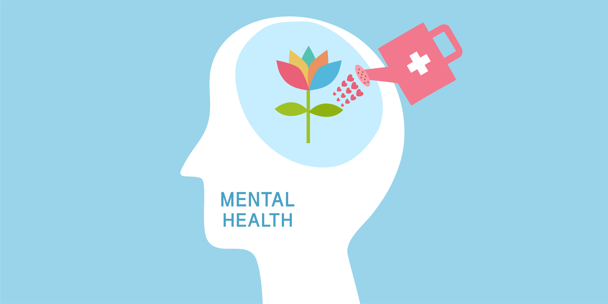
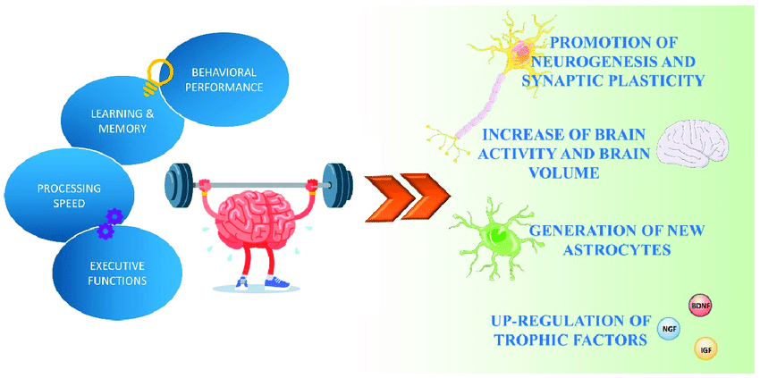
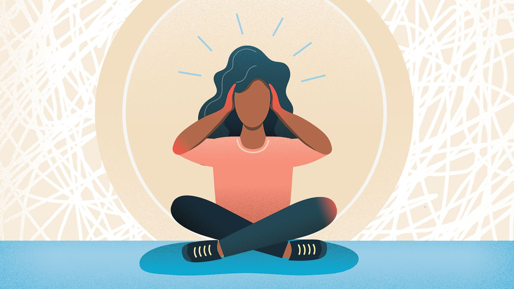
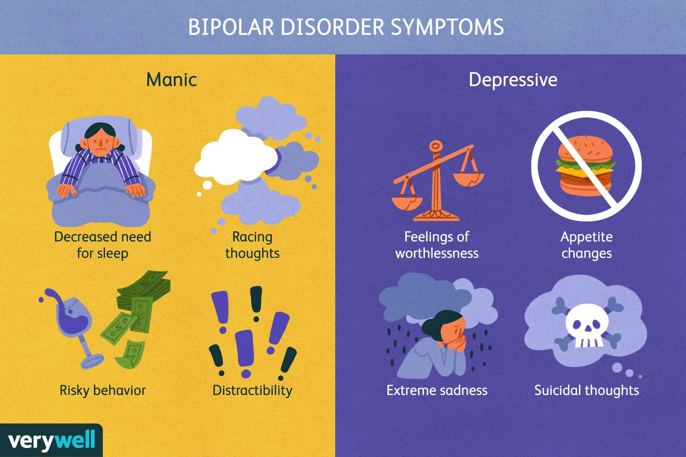
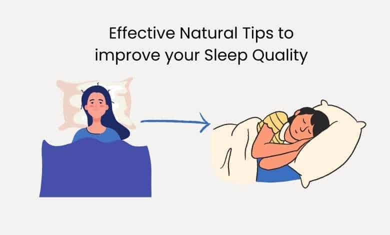
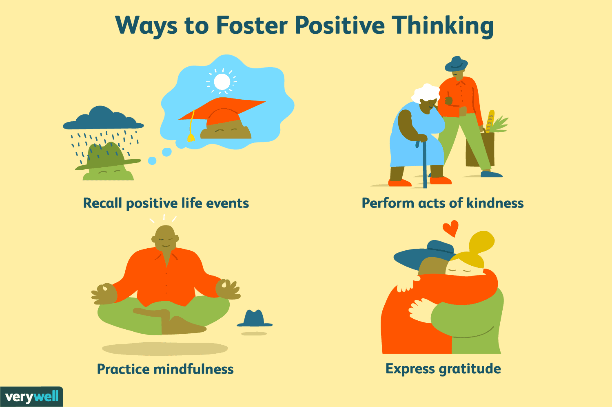
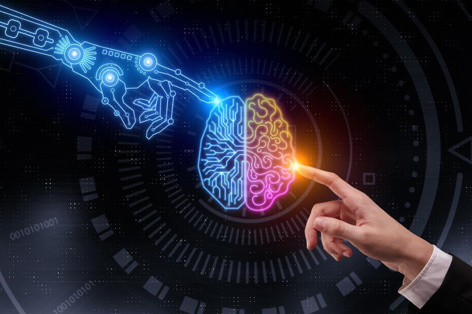

Physical fitness is often associated with its positive effects on the body, such as improved strength and
cardiovascular health.However, its impact on mental well-being is
equally significant but often overlooked. In this blog post, we will explore the powerful connection between
physical fitness and psychological development. We will delve into the various ways in which exercise
positively influences our mental health, cognitive function, emotional well-being, and overall psychological
growth.

The Neurochemical Effects of Exercise
Engaging in regular physical activity stimulates the release of endorphins, serotonin, dopamine, and other neurochemicals in the brain. These chemicals play a crucial role in improving mood, reducing stress and anxiety, and promoting feelings of happiness and well-being.

Enhancing Cognitive Function
Exercise has been shown to enhance cognitive function and improve brain health. It boosts blood flow and oxygen delivery to the brain, which enhances memory, attention, and overall cognitive performance. Additionally, physical activity stimulates the growth of new neurons and enhances neural connections, promoting brain plasticity and reducing the risk of cognitive decline.
Stress Reduction and Anxiety Management
Physical activity acts as a natural stress reliever. Exercise helps reduce stress levels by increasing the production of endorphins, which act as natural mood elevators. Moreover, regular exercise provides an outlet for releasing tension and pent-up energy, helping to alleviate symptoms of anxiety and promoting a sense of calm and relaxation.

Boosting Self-Esteem and Confidence
Regular exercise can have a profound impact on self-esteem and confidence. Achieving fitness goals, improving physical capabilities, and seeing positive changes in body composition can significantly enhance self-perception and self-worth. Additionally, exercise promotes a sense of empowerment and mastery over one's body, leading to increased confidence in various aspects of life.
Managing Depression and Mood Disorders
Exercise has been shown to be an effective adjunct therapy for individuals experiencing depression and mood disorders. Physical activity increases the production of endorphins and other feel-good neurochemicals, which can alleviate symptoms of depression and improve overall mood. Engaging in group exercise or outdoor activities can also provide social interaction and a sense of community, further enhancing mental well-being.

Building Resilience and Stress Coping Mechanisms
Regular exercise builds resilience by improving the body's ability to handle stress. Physical fitness helps regulate the stress response system, making individuals more resilient to stressors in daily life. Exercise also provides a healthy outlet for managing and coping with stress, reducing the risk of developing maladaptive coping strategies.
Improving Sleep Quality
Physical fitness positively influences sleep quality and duration. Engaging in regular exercise promotes better sleep patterns, enhances sleep efficiency, and helps individuals fall asleep faster. Improved sleep has a direct impact on mental health, promoting better cognitive function, emotional stability, and overall well-being.

Promoting Emotional Well-being and Mental Balance
Exercise plays a significant role in promoting emotional well-being and maintaining mental balance. Physical activity stimulates the release of endorphins and other mood-enhancing chemicals, which can reduce symptoms of anxiety, depression, and stress. Regular exercise also provides a sense of accomplishment, fosters discipline, and offers a healthy outlet for emotional expression.

Physical fitness goes beyond its physical benefits; it has a profound impact on psychological development. Regular exercise improves mood, enhances cognitive function, reduces stress and anxiety, boosts self-esteem, and promotes emotional well-being. By incorporating physical activity into our daily lives, we can cultivate a strong mind-body connection and experience the transformative power of exercise in our psychological growth and overall mental health.
Written on 2022-12-01
Featured Post

10 Book Reading Habits to Cultivate for a Lifetime of Learning and Enjoyment

The Future of Technology: Exploring Cutting-Edge Innovations
Mastering a New Skill: A Year of Learning Experiments
Exploring Career Paths: A Guide for High School Students

Comments